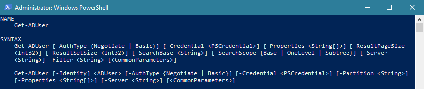

PowerShell Essentials
First: There's Windows PowerShell (included with Windows and common versions run from 2.0 to 5.1) and PowerShell
Core (cross-platform download for Windows, macOS, and Linux; versions start at 6.0). There are some
differences, but they're not substantial to what this guide will cover. EXCEPT that some modules are
Windows PowerShell-only -- such as the ActiveDirectory module; PS Core 7+ is aiming for much closer Windows PS
compatibility.
→ If you do use PowerShell Core then anytime you see "powershell.exe" in this guide replace with "pwsh.exe".
PowerShell is more recent than the CMD/DOS prompt, is mostly compatible, allows you to run the same external .EXE commands, and doesn't have as much legacy baggage. Though it supports as much of the legacy way of doing things as possible - best of both worlds. PowerShell is very regular and consistent. PowerShell is based on Objects rather than Plain Text, and PowerShell includes all the features of the .NET Framework.
To start PowerShell run powershell.exe, or look in your Start Menu for "PowerShell"
Type commands at the PS C:\> prompt, press Enter after each.
PowerShell commands (or cmdlets are they are known) are often very verbose/long (and are usually of the form
Verb-Noun, like Get-Content) so most people use aliases for common commands (eg. using
dir instead of Get-ChildItem). Type alias to see a list of all aliases. The
aliases match the old DOS commands, which are shorter, or are abbreviations for longer PowerShell commands.
There's also aliases for many Linux/Bash/macOS commands (like ls or cp).
Get-ADUser, Set-ADUser, New-ADUser,
Remove-ADUser - each representing a different action you can perform on ADUsers.Get-VerbYou can generally run any DOS/CMD command (.EXE or .BAT file) in PowerShell. While you can run regular external
command/EXE files, like PING, IPCONFIG, ROUTE, etc from PowerShell
sometimes their options/switches cause issues if you need to "enclose things in quotes". When running external
.EXE commands you have to use the format of switches/options each command expects, not the "PowerShell way".
PowerShell cmdlets and CMD/DOS .EXE files can interact but the results are not always as expected due to
PowerShell outputting and expecting Objects rather than plain-text.
Parameters/switches/options in PowerShell are separated from commands with a Space, and start
with a dash -, eg. -Identity or -Properties.
-Identity administrator or -Properties mail,proxyAddresses-properties, but -p won't work if there's also a -partition option)-Identity with Get-ADUser and just type
Get-ADUser username as Identity is assumed to be the first parameter).There's Tab completion for both commands and parameters/switches/options, and files/directories. Start typing the command or option and press the Tab key to cycle through all choices, which even works for files. If you use Tab Completion you won't mind that commands or switches are so long - just type enough and press Tab a few times to get to what you're looking for.
get-adu[press TAB] and it will complete to Get-ADUser then type
-i[press TAB] and it will complete to -Identity
after which you can type a username.
cd \win[press TAB] and it will complete to cd C:\Windows.Get-AD[TAB several times] will cycle through various AD related commands (eg.
Get-ADComputer, Get-ADGroup, Get-ADUser, etc). Works for files /
directories too!To get Help in PowerShell you type help and then cmdlet you want help for, such as:
help Get-Process, add -full to see all the details and examples:
help Get-Process -full
The help text will give a description of the command and the options you can (or must) provide. If you add -full you'll get all the details of the various options and often some Examples. If you
don't see much run Update-Help to refresh the help file cache.
The SYNTAX section will show what command line options/switches/arguments you can use. The general format is that optional arguments are shown in [square brackets], the value is shown in <angled brackets> indicating the type; if only a limited set of choices are acceptable values they will be shown in {curly braces} separated by vertical pipes |. PowerShell commands often have multiple parameter sets which are just distinct groupings of options/arguments representing different ways of running the command (either this set of arguments or another set of arguments).
PowerShell is (generally) NOT Case Sensitive. You can type DIR, dir,
DiR, etc. Usually PowerShell commands are written in PascalCase with words forced together
using CapitalsToSeparateWords for readability, usually starting with a verb, as in:
Get-SomeThingYouWant, or Remove-ThingYouDont.
To run a script you need to specify the path, even if you are in the same directory you still have to
specify the current directory, eg: .\test-script.ps1. You can use Tab Completion to start typing the
name and press TAB and it will complete the filename along with the .\ before it.
Set-ExecutionPolicy RemoteSignedUnlike the CMD/DOS Prompt: you can use the PowerShell prompt to do math, such as typing 16 * 4
and it will return 64. You can enter any PowerShell command at the prompt and
test/build scripts one command at a time - that is: variables and whatnot persist between commands (but not
between sessions - if you close the window everything not saved to a file is gone).